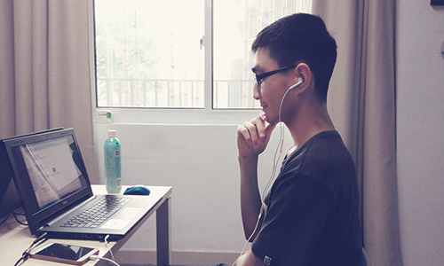

陈伟（蓝色空间15级成员）
我是软工151班的陈伟，浙江慈溪人。已入坑ACM一年，平常也就做做ACM的水题。由于同届其他队员做网页、研究黑科技之类的原因，侥幸获得了校级ACM竞赛一等奖。学习心得嘛，只能说大一上学期的期末成绩很重要，直接影响专业分班。但C语言课太水了，一个学期的课，没什么必要去听，其实只需要花几个小时看幕课网上的视频，再练练几题ACM水题就足够了。至于高数和英语嘛，看自己造化咯。
我是软工151班的陈伟，浙江慈溪人。已入坑ACM一年，平常也就做做ACM的水题。由于同届其他队员做网页、研究黑科技之类的原因，侥幸获得了校级ACM竞赛一等奖。学习心得嘛，只能说大一上学期的期末成绩很重要，直接影响专业分班。但C语言课太水了，一个学期的课，没什么必要去听，其实只需要花几个小时看幕课网上的视频，再练练几题ACM水题就足够了。至于高数和英语嘛，看自己造化咯。